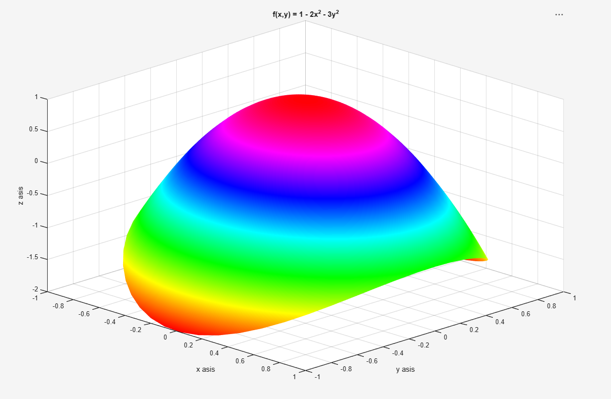
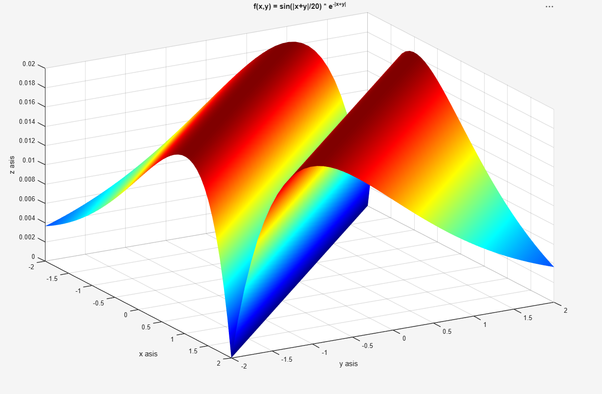

Kristupas Radauskas
Esu Vilnius Tech DI studentas
Apie
Vilnius Tech Dirbtinio intelekto sistemų studentas
Esu motyvuotas ir technologijomis besidomintis Vilniaus Gedimino technikos universiteto (Vilnius Tech) Dirbtinio intelekto sistemų studijų programos studentas. Gilinuosi į mašininį mokymąsi, duomenų analizę bei šiuolaikines programavimo technologijas.
- Universitetas: Vilnius Tech
- Svetainė: kradauskas.github.io
- Miestas: Vilnius, Lietuva
- Telefonas: Nenurodoma (privatumo sumetimais)
- Statusas: Studentas
- Laipsnis: Bakalauro studijos
- El. paštas: Kristupas.Radauskas@stud.vilniustech.lt
- Praktika / Karjera: Atviras pasiūlymams
Studijų metu aktyviai domiuosi dirbtinio intelekto algoritmų taikymu, sistemų modeliavimu ir praktiniu programinės įrangos kūrimu. Siekiu įgyti vertingos praktinės patirties realiose IT komandose, prisidėti prie inovatyvių projektų įgyvendinimo bei nuolat tobulinti įgūdžius dirbant su naujausiomis technologijomis.
Gebėjimai
Technologijos, programavimo kalbos ir įrankiai, su kuriais dirbu studijų bei praktikos metu
Patirtis
Išsilavinimas, inžinerinė veikla ir praktinė patirtis IT srityje
Santrauka
Kristupas Radauskas
Vilniaus Gedimino technikos universiteto (Vilnius Tech) Dirbtinio intelekto sistemų studijų programos studentas, besidomintis mašininiu mokymusi, duomenų analize, algoritmų kūrimu ir moderniomis žiniatinklio technologijomis.
- Vilnius, Lietuva
- kradauskas.github.io
- Kristupas.Radauskas@stud.vilniustech.lt
Išsilavinimas
Dirbtinio intelekto sistemos (Bakalauras)
2025 - Dabartis
Vilniaus Gedimino technikos universitetas (Vilnius Tech)
Studijuojami moduliai apima procedūrinį ir objektinį programavimą (C, Python), skriptinį programavimą, kompiuterių architektūrą, diskrečiąją matematiką bei inžinerinius skaičiavimus su MATLAB.
Praktinė patirtis ir projektai
Mokslinė ir laboratorinė inžinerinė veikla
2025 - Dabartis
Vilnius Tech, Vilnius
- Matematinių modelių realizavimas ir duomenų vizualizavimas taikant MATLAB skaitinius metodus.
- Žiniatinklio sistemų kūrimas pasitelkiant HTML5, modernų CSS (Bootstrap) bei JavaScript.
- Versijų valdymo sistemų „Git“ ir „GitHub Pages“ automatizavimas bei diegimas.
Web sprendimų kūrimas ir individuali veikla
2025 - Dabartis
Vilnius, Lietuva
- Specializuotų žiniatinklio įrankių ir duomenų valdymo skydelių kūrimas pagal individualius reikalavimus.
- Duomenų bazių užklausų optimizavimas bei REST API integracijos.
- Skaitmeninių mokymosi priemonių ir interaktyvių formų diegimas.
Darbų pavyzdžiai
Atliktų MATLAB laboratorinių darbų (3-4 LD) funkcijų grafikai ir skaitinės analizės vizualizacijos
- Visi grafikai
- 3 LD Grafikai
- 4 LD Grafikai





Paslaugos
Teikiamos programavimo, duomenų analizės ir skaitmeninių sistemų diegimo paslaugos
Paslaugų kainoraštis
| Paslaugos pavadinimas | Aprašymas | Kaina |
|---|---|---|
| Tinklalapių programavimas | Reprezentacinių asmeninių ir verslo svetainių kūrimas, pritaikymas mobiliesiems įrenginiams. | 150 € |
| Duomenų analizė ir vizualizavimas | Statistinių duomenų apdorojimas, grafikų bei ataskaitų generavimas taikant Python ir MATLAB. | 100 € |
| Skriptų ir užduočių automatizavimas | Pasikartojančių failų apdorojimo, duomenų surinkimo (web scraping) ir API skriptų kūrimas. | 80 € |
Naudojamos technologijos ir įrankiai
- HTML5, CSS3 (Bootstrap, Responsive Design)
- JavaScript (ES6+, DOM manipuliacija, API integracijos)
- Python (duomenų apdorojimo ir automatizavimo bibliotekos)
- MATLAB skaičiavimo ir vizualizavimo terpė
- Git ir GitHub versijų kontrolės sistemos
Tinklalapių programavimo etapai
-
Reikalavimų analizė ir architektūros planavimas:
- Kliento poreikių ir tikslinės auditorijos nustatymas
- Struktūros (wireframe) ir puslapio elementų išdėstymo suderinimas
- Vartotojo sąsajos (UI) realizavimas taikant semantinį HTML ir CSS
- Interaktyvių funkcijų programavimas su JavaScript ir testavimas
- Svetainės talpinimas serveryje (GitHub Pages) ir galutinis derinimas
Kontaktai
Kilus klausimams ar norint bendradarbiauti, susisiekite nurodytais kontaktais arba užpildykite formą
Adresas
Vilnius, Lietuva (Vilnius Tech)
Telefonas
Nenurodoma (privatumo sumetimais)